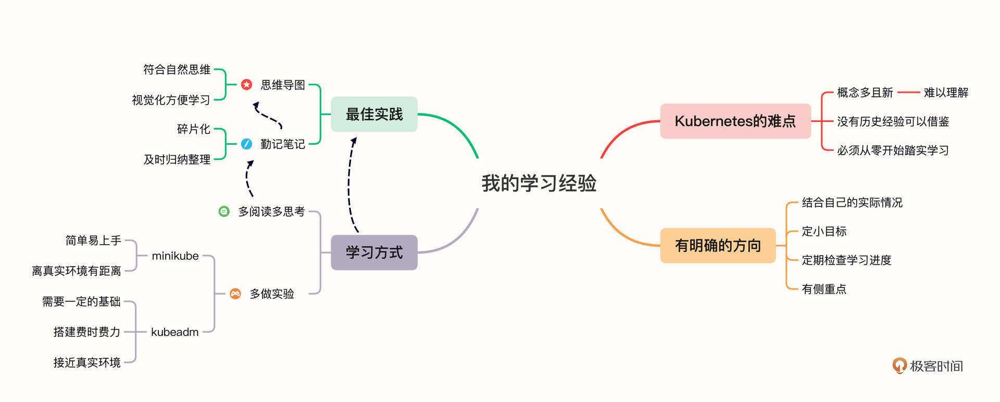

- 00 开篇词 迎难而上，做云原生时代的弄潮儿.md
- 00 课前准备 动手实践才是最好的学习方式.md
- 01 初识容器：万事开头难.md
- 02 被隔离的进程：一起来看看容器的本质.md
- 03 容器化的应用：会了这些你就是Docker高手.md
- 04 创建容器镜像：如何编写正确、高效的Dockerfile.md
- 05 镜像仓库：该怎样用好Docker Hub这个宝藏.md
- 06 打破次元壁：容器该如何与外界互联互通.md
- 07 实战演练：玩转Docker.md
- 08 视频：入门篇实操总结.md
- 09 走近云原生：如何在本机搭建小巧完备的Kubernetes环境.md
- 10 自动化的运维管理：探究Kubernetes工作机制的奥秘.md
- 11 YAML：Kubernetes世界里的通用语.md
- 12 Pod：如何理解这个Kubernetes里最核心的概念？.md
- 13 Job_CronJob：为什么不直接用Pod来处理业务？.md
- 14 ConfigMap_Secret：怎样配置、定制我的应用.md
- 15 实战演练：玩转Kubernetes（1）.md
- 16 视频：初级篇实操总结.md
- 17 更真实的云原生：实际搭建多节点的Kubernetes集群.md
- 18 Deployment：让应用永不宕机.md
- 19 Daemonset：忠实可靠的看门狗.md
- 20 Service：微服务架构的应对之道.md
- 21 Ingress：集群进出流量的总管.md
- 22 实战演练：玩转Kubernetes（2）.md
- 23 视频：中级篇实操总结.md
- 24 PersistentVolume：怎么解决数据持久化的难题？.md
- 25 PersistentVolume + NFS：怎么使用网络共享存储？.md
- 26 StatefulSet：怎么管理有状态的应用？.md
- 27 滚动更新：如何做到平滑的应用升级降级？.md
- 28 应用保障：如何让Pod运行得更健康？.md
- 29 集群管理：如何用名字空间分隔系统资源？.md
- 30 系统监控：如何使用Metrics Server和Prometheus？.md
- 31 网络通信：CNI是怎么回事？又是怎么工作的？.md
- 32 实战演练：玩转Kubernetes（3）.md
- 33 视频：高级篇实操总结.md
- 加餐 docker-compose：单机环境下的容器编排工具.md
- 加餐 谈谈Kong Ingress Controller.md
- 结束语 是终点，更是起点.md
结束语 是终点，更是起点
你好，我是Chrono。
经过近三个月的刻苦努力，我们的Kubernetes学习之旅在今天就抵达“终点站”了。
三个月的时间，说长不长，说短不短，所谓“一期一会”，我非常珍惜与你共同度过的这段时间，同时也感谢你对专栏的支持和热情留言，正是由于我们彼此的帮助和鼓励，才让这段光阴变得更有意义、更加精彩。
分别之际，我再来聊聊我自己的学习经历和建议吧，就当做是一个简单的“复盘”。
我的Kubernetes学习经验
其实在“开篇词”里已经说过了我学习Kubernetes的过程，不过作为“前车之鉴”，我觉得有必要再回顾一下，相信也有不少同学对我是如何学习Kubernetes会比较感兴趣，而且这段经历也有一点参考的价值。
首先要说的是，我属于研发出身，技术背景是C/C++/Nginx，所以在学习的过程中就会下意识地从这个角度去筛选知识点，偏重应用的开发和部署，对系统的安装、运维、管理则关注的不是太多。
这里我也给你提个醒，学Kubernetes最好是结合自己的实际情况，定个“小目标”，比如“我要学会在Kubernetes里开发云原生应用”“我要运维Kubernetes的监控系统”“我要搭建出高可用的Kubernetes生产系统”等等，而我当初的目标就是“要搞明白Nginx Ingress Controller的用法”。
有了这样比较明确的目标，你就会有方向、有重点地去研究Kubernetes，方便检查自己的学习进度，也更容易集中精力“钻进去”，否则漫无目的学习就很容易迷失在Kubernetes的知识海洋里（图片来源），也很难构建起完整的知识体系。

和大多数人一样，我一开始学Kubernetes也是困难重重，主要原因还是Kubernetes是一个全新的系统，上来就要面对一大堆“不知所云”的概念（Pod、ConfigMap、Deployment等等），没有任何以往的经验可以借鉴，完全要从零开始。
初学者想要翻越这个“高山”必须要下苦功夫、花大力气，我个人感觉这个过程没有捷径可走，必须反复阅读思考，再通过做实验来加深印象。只要度过了这个“危险期”，理解了底层知识，打好了基础，后面的学习就会变得轻松一些了。
说到做实验，我认为这也是学习Kubernetes的一个非常重要的手段。毕竟Kubernetes是一个“操作系统”，如果仅仅是看文字资料“纸上谈兵”，不真正上手演练，是很难弄清楚它的工作原理和运行机制的。
最初我用的就是minikube，简单方便，功能也很齐全，对于Kubernetes入门来说非常合适，可以快速上手。
不过因为minikube是基于Docker虚拟的，在节点和网络等方面离真实环境还是有一些差距，所以我也建议你在对Kubernetes有了比较深入的了解之后还是应该改换成kubeadm，这样才能够更透彻地学习研究Kubernetes。
在学习的过程中我还有两个“最佳实践”，一个是勤记笔记，另一个是画思维导图。
俗话说“好记性不如烂笔头”，资料看得太多，大脑不可能全记住，我们就要及时把阅读时的思考和体会写下来。
不过你也不必强求笔记完整详细，短短一两句话、简单的几个链接都是有价值的，等到笔记积累到一定的数量，就可以再花一些时间做个归纳和浓缩，这个时候就会用到思维导图。
我想你应该对思维导图很熟悉吧，它的树状发散的形式很好地符合了人的自然思维模式，可以想到哪儿就写到哪儿，不需要什么心理负担，而且我们还可以给条目加各种小标记，条目之间还可以互相引用，用视觉效果来强化学习。
把碎片化的笔记和有结构的思维导图结合起来，我们就能更顺畅地整理思路、总结经验，把零散的想法、概念分类合并，逐渐就能掌握系统、全面的知识了。
作为示范，我把刚才说的这些也画成了思维导图。你看，有了图形化、可视化，知识点学习吸收起来是不是就更容易一些呢。

今后要怎么学Kubernetes
课程虽然马上要结束了，但在“终点站”之外，Kubernetes的世界才刚刚展现在你的面前。这个世界是如此的广阔宏大，我们的Kubernetes课程可以说是只走出了“万里长征的第一步”，今后的道路将要去向何处，就要由你自己来把握了。
接下来我就来说说四个可能的方向吧，你可以把它们看成是学习Kubernetes的“攻略指引”，帮助你走出属于自己的路。
第一个是阅读Kubernetes官网上的文档。
Kubernetes官网（https://kubernetes.io/zh-cn/docs/home/）里的资料非常丰富详细，包括入门介绍、安装指导、基本概念、应用教程、运维任务、参考手册等等。
当然了，官网文档不是完全面向初学者的，不像我们的课程那样“循序渐进”，写得也不都是那么通俗易懂，要有一定的基础才能够看得下去。但它的优势就是全面、权威，覆盖了Kubernetes的每一个特性，你对Kubernetes有任何的疑惑和不解，都能够在这些文档里找到答案。
不过官网文档太多太杂也对我们的学习造成了困难，想要去按部就班地查找知识点会很麻烦，这个时候就要善用它的搜索功能了，用关键字来快速定位文章、页面，节约我们的时间和精力。
第二个学习方向是看Kubernetes的博客。
官网上的文档只是描述了Kubernetes的现状，而没有讲它的历史，想要知道Kubernetes里的这些API对象是怎么设计出来的，怎么一步步发展到今天的这个样子，就要去看它的技术博客文章了。
这里我推荐你去阅读英文博客（https://kubernetes.io/blog/），虽然中文官网也有博客，但翻译的不全，比较少，而英文博客从2015年开始，每个重要特性的变更几乎都有文章来介绍。而且博客和文档不同，它更注重面对普通用户，阐述的是技术决策的思考过程，也就更容易理解一些。
如果条件允许的话，我建议你从2015年的第一篇博客开始看起，最好每篇都简略地过一遍。把这些博客全看完，“以史为鉴”，你就能够理解Kubernetes的演变过程了，也会对Kubernetes的现状有更深刻的认识。
第三个是上CNCF网站（https://www.cncf.io/），看它的全景图，在里面找自己感兴趣的项目，然后在Kubernetes环境里部署应用起来，在实践中学习Kubernetes。
CNCF全景图里的项目非常多，其中由它托管的项目又分成毕业（Graduated）项目、孵化（Incubating）项目和沙盒（Sandbox）项目。
其实这些项目只要进入了CNCF，质量都是比较高的，区别只在于成熟度的不同而已。毕业项目是最成熟的，已经被业界广泛承认和采用，可用于生产环境；孵化项目应用程度还不太广，贡献者也不是太多，只有少数生产实践；而沙盒项目则属于实验性质，还没有经过充分的测试验证。
这里我们也可以来简单了解下毕业项目和孵化项目，课后你可以挑自己感兴趣的深入研究。
这张图是目前CNCF里全部的16个毕业项目：

这里面我们已经全面学习了Kubernetes，简单介绍过containerd和Prometheus，其他我个人比较感兴趣的还有Harbor、Helm、Vitess。
CNCF的孵化项目目前有39个，比起毕业项目它们的知名度要略差一些，这个截图列出了一部分，其中我比较感兴趣的有gRPC、SPIRE、NATS、OpenTelemetry：

第四个学习方向要量力而行，是参加Kubernetes的培训并且通过认证（https://kubernetes.io/zh-cn/training/）。
和很多其他的计算机技术一样，Kubernetes也设立了官方的培训课程和资质认证，在国内大家都比较了解的应该就是CKA（Certified Kubernetes Administrator）了，另外还有一个更高级的是CKS（Certified Kubernetes Security Specialist）。
CKA主要考查的是对Kubernetes的概念理解和集群管理维护能力，重点是动手操作，使用kubectl来解决各种实际环境里可能遇到的问题。它的难度并不太高，但考点覆盖面广，而且考试时间长达2个小时（以前是3个小时），对脑力和体力都有不小的挑战。
由于Kubernetes在云原生领域“一统天下”，CKA认证近几年也就“火”了起来，相关的考试资料有很多，你可以轻易地在各大网站上找到，学完了我们的这个专栏课程，再适当地强化训练一下，拿到CKA证书应该不是什么太难的事情。
不过要注意的是，因为Kubernetes版本更新很频繁，所以CKA是有时效期的，三年（以前是两年）过后失效就得重考，你需要评估一下考试对自己收益再慎重做决定。
临别感言
聊了自己的学习经验，也总结了四条继续攻略的学习方向供你参考，在我们共度三个月的最后我也还有一些感触想跟你分享。
虽然这已经是我在极客时间的第三个专栏了，但挑战仍然是不小，从年初隆冬时的调研开始，到盛夏酷暑时的收笔完结，持续了大半年，很多的业余时间都“赔”进来了，但我觉得值。
和前两个课写的HTTP协议、C++语言比起来，我使用Kubernetes的时间还是有点短，所以自身的积累也就不那么深厚，写文章不像以前能那么“信手拈来”，要反复查文档、做实验来确认，整个过程有苦有乐。现在课程结束了，回头再看，也算是对自己Kubernetes能力的一个思考和总结，收获还是挺多的。
不过由于Kubernetes的知识点太深太杂，虽然我尽力想把它们讲清楚，课程里的每一节几乎都在15分钟左右（对比前两个专栏的10分钟大幅度增长），工作量加大了很多，但感觉还是只说透了很少的一部分，其他有用的相关内容就只能寥寥一两句话带过，实在有点无奈和可惜。
以后如果有机会的话，我想也还会和前两个专栏一样，不定期地补充一些“加餐”，把自己对Kubernetes最新的理解和心得分享出来，让我们持续学习，共同进步。
另外，我还看到有同学在留言里反复提及“上生产系统”，这个要求对于我来说可能是有点高了。因为我基本不参与系统运维工作，搭建Kubernetes环境只是方便我自己的开发测试，真正上线应用还是会找专门的运维同事，而实际的生产环境要比虚拟机环境复杂得多，我没有时间也没有能力把这些都了解清楚，所以也只能抱歉了。
不知道你是否一直在默默认真学习，在专栏要结束的今天，我非常希望能在留言区见到你的身影，听听你学习这个专栏的感受和收获，如果你对课程有任何反馈与建议，也欢迎填写这份问卷。
行文至此，那就让我们在这里道一声珍重，说一声“再见”吧。
祝愿你以此为新征途的起点，满怀信心和希望，大步迈向充满无尽可能的Kubernetes新世界，开拓出自己的成功之路！
© 2019 - 2023 Liangliang Lee. Powered by Vert.x and hexo-theme-book.